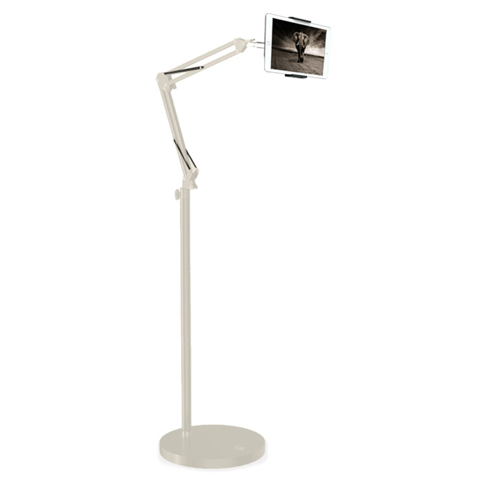
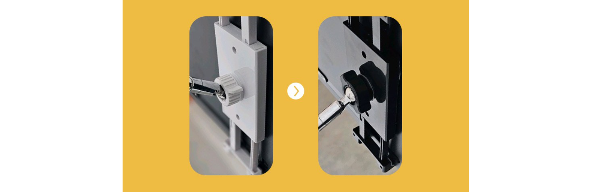
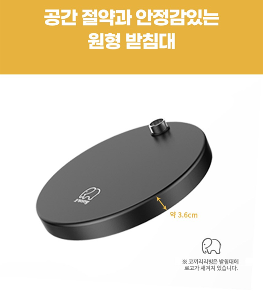
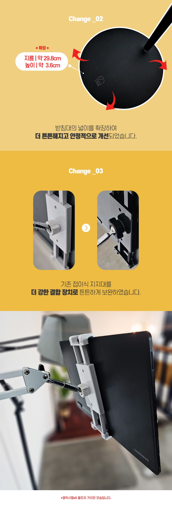
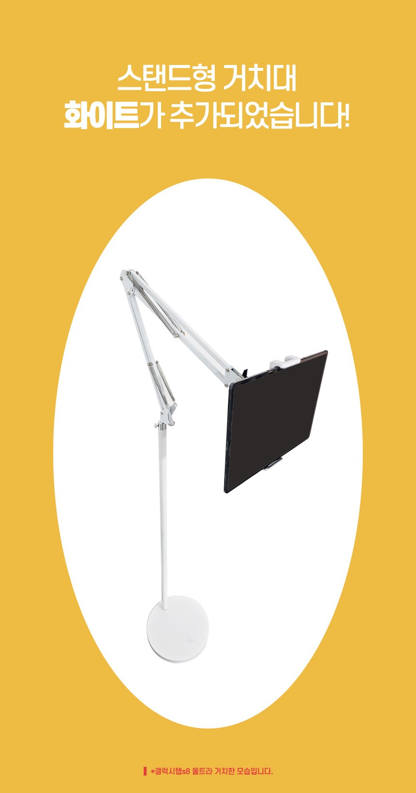
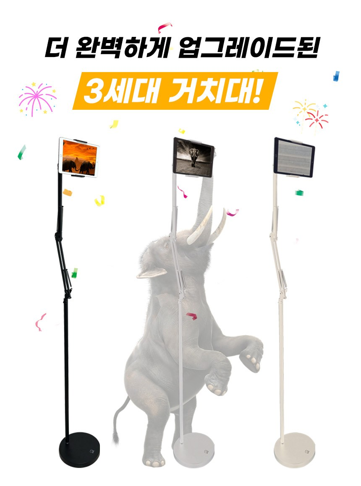

얼마 못 가 고개 숙이는 처진 관절.
스프링 지지력이 약한 저가형 자바라 관절은 500g이 넘는 대형 태블릿 하중을 버티지 못하고 5분 만에 배 위로 스르륵 처집니다. 화면이 낮아질수록 목은 45°~60° 앞으로 꺾여 거북목과 어깨 결림이 심해지고, 결국 손으로 화면을 받쳐 들어야 해 거치대의 기능을 상실합니다.
시야각 상실 · 거북목 유발
침대에서 들고 보던 피로감, 이제 끝낼 때입니다.
3.8kg 탄소강 원형 베이스와 듀얼 스프링으로 완성한 처짐 없는 자립형 스탠드.
매일 밤 침대와 소파에서 태블릿을 손으로 들고 보느라 저려오는 손목과 뻐근한 목덜미로 고생하셨나요? 3.8kg 고중량 원형 메탈 베이스가 바닥에 묵직하게 밀착되어, 가구 손상이나 클램프 설치 없이 바닥 어디든 1초 만에 자립합니다. 손에 힘을 빼고 이불 속에 편안히 누운 채, 내 시선 정면에서 흔들림 없이 펼쳐지는 나만의 침실 시네마를 경험해 보세요.

저가형 자바라 거치대에서 자주 겪는 실패 경험.
시중의 저가형 자바라 거치대를 사용해 본 분들이 공통적으로 호소하는 3가지 고질적 문제점을 짚어보았습니다. 원인을 알면 왜 코끼리리빙 3세대의 기계식 설계가 필요한지 분명해집니다.
스프링 지지력이 약한 저가형 자바라 관절은 500g이 넘는 대형 태블릿 하중을 버티지 못하고 5분 만에 배 위로 스르륵 처집니다. 화면이 낮아질수록 목은 45°~60° 앞으로 꺾여 거북목과 어깨 결림이 심해지고, 결국 손으로 화면을 받쳐 들어야 해 거치대의 기능을 상실합니다.
두꺼운 평상형 침대, 모서리가 둥근 호텔식 프레임, 가죽 소파에는 집게형 클램프를 물릴 수 있는 틈새가 전혀 없습니다. 억지로 끼우려다 고가 가구에 찍힘이나 가죽 찢어짐만 남기고, 결국 제대로 설치조차 하지 못한 채 구석에 방치되어 공간만 차지하게 됩니다.
가벼운 플라스틱 받침대는 화면을 살짝만 터치해도 10초 넘게 좌우로 요동칩니다. 헐거워진 조립 관절이 풀려 기기가 얼굴 위로 쓰러지는 아찔한 경험을 겪고, 결국 2~3만 원짜리 저가 제품을 샀다가 몇 달 만에 다시 새 제품을 검색하는 불필요한 이중 지출이 발생합니다.

설계와 구조가 다르면 일상의 편안함이 달라집니다.
코끼리리빙 3세대의 차별점은 단순한 스펙 나열이 아닙니다. 14인치 대화면 태블릿의 무게와 사용자가 누웠을 때의 시선 각도를 정밀 계산하여 설계된 기계식 구조에 있습니다. 바닥을 든든하게 받치는 3.8kg 베이스부터 충전 홀이 내장된 헤드까지 4가지 디테일을 확인해 보세요.

과장 없는 정밀 계측과 공인 데이터 검증.
설치 공간의 크기, 소지하신 기기의 무게와 인치수, 침대 매트리스 높이는 거치대 선택의 핵심 기준입니다. 공식 사양표와 실제 계측으로 확인된 핵심 데이터를 한눈에 확인하시고 현명한 선택을 내려보세요.
"아이패드 프로 12.9인치 올려놓고 침대에서 보는데 관절이 1도 안 처집니다. 조립도 도구 없이 3분 만에 끝났어요." — 오픈마켓 실구매자 리뷰 발췌
"자바라 거치대 3번 버리고 이거 샀는데 진작 살 걸 그랬습니다. 베이스가 묵직해서 흔들림이 거의 없네요." — 오픈마켓 실구매자 리뷰 발췌
최대 전개 높이
서서 홈트레이닝을 하거나 하이 매트리스 침대에서도 고개를 숙이지 않는 여유로운 높이원형 베이스 단독 무게
총 4.6kg 중 3.8kg를 바닥에 집중 배치하여 캔틸레버 하중 전도 위험을 원천 방지헤드 최대 확장 폭
4.9인치 스마트폰부터 14.6인치 대형 태블릿(갤탭 S8 울트라 가로폭 20.8cm)까지 거치 가능인테리어 맞춤 컬러
감각적인 무광 매트 블랙 · 모던 퓨어 화이트 · 포근하고 감성적인 웜 베이지 라인업

구매 전 꼭 확인해야 할 핵심 안내.
고객님들께서 구매 전 가장 많이 문의하시는 질문들을 정리했습니다. 사소한 궁금증까지 미리 확인하시고 안심하고 선택하세요.
아닙니다. 최대 1.7m 높이에 달하는 롱 암 스탠드 구조상, 손으로 액정을 누를 때 발생하는 미세한 반동은 자연스러운 물리적 탄성 현상입니다. 코끼리리빙 3세대는 3.8kg의 묵직한 탄소강 원형 받침대가 중심을 꽉 잡아주어, 시중의 저가 플라스틱 스탠드 대비 반동이 훨씬 빠르고 안정적으로 잦아듭니다. 바닥 파이프 결합 나사를 손으로 한 번 더 단단히 조여주시면 흔들림을 극적으로 억제할 수 있습니다.
네, 가로 방향으로 안정적인 거치가 가능합니다. 공식 권장 사양은 4.9인치~13.5인치이지만, 헤드 클립이 최대 24cm까지 여유 있게 확장되어 갤럭시탭 S8 울트라(14.6인치, 가로 약 20.8cm)의 가로 거치 실물 테스트가 완료되었습니다. 다만 14인치 이상 고중량 태블릿의 경우, 상단 관절 조임 손잡이 볼트를 평소보다 단단히 조여서 고정해 주시면 장시간 시청에도 처짐 없이 사용하실 수 있습니다.
원형 베이스 지름은 약 29.8cm이며 두께는 약 3.6cm로 매우 납작하고 슬림하게 제작되었습니다. 침대 프레임 하단 틈새나 협탁 옆 좁은 공간에 쏙 밀어 넣어 배치할 수 있어 실제 생활 동선에 방해를 주지 않습니다. 사각 받침대와 달리 모서리가 없어 밤중에 어두운 방에서 발가락을 부딪혀 다칠 염려가 없으며, 클램프가 없어 원하는 곳 어디든 손쉽게 옮길 수 있습니다.
별도의 드라이버나 육각 렌치 같은 공구가 전혀 필요하지 않습니다. 원형 베이스에 탄소강 파이프를 시계 방향으로 돌려 결합하고, 상단 암을 꽂은 뒤 인체공학적 손잡이 볼트를 손으로 돌려 조여주기만 하면 누구나 3분 안에 손쉽게 조립을 마칠 수 있습니다. 여성분이나 1인 가구도 부담 없이 완성할 수 있는 직관적인 조립 구조입니다.

침대 옆, 소파 옆, 책상 옆 어디서나.
하루 일과를 마치고 침대에 누웠을 때, 손목과 목에 전해지던 피로를 이제 내려놓으세요. 바닥에 툭 내려놓기만 하면, 당신만을 위한 프라이빗 침실 영화관이 오늘 밤 펼쳐집니다.
이 포스팅은 쿠팡 파트너스 활동의 일환으로, 이에 따른 일정액의 수수료를 제공받습니다.
재고 소진 시 배송 일정이 지연될 수 있으니 쿠팡 판매 페이지에서 실시간 재고를 확인해 보세요.